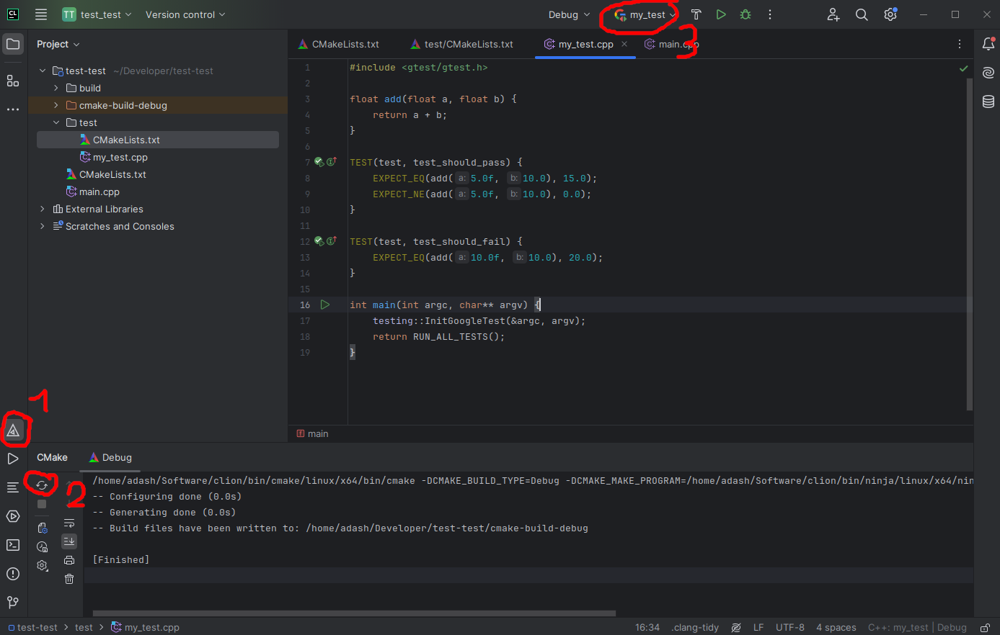

Lab 2 - Project Workflow: Git, CMake & Team Project
Responsible: Ing. Petr Šopák
This laboratory introduces the software development workflow used in the rest of the BPC-PRP course.
You will learn how to manage source code using Git, how C++ projects are structured, and how to build them using CMake.
The project created in this lab will serve as a base project for subsequent laboratories.
By the end of this lab, you should be able to:
- use Git for version control and teamwork,
- clone, commit, push, pull, and resolve merge conflicts,
- understand the structure of a C++ project,
- build a project using CMake,
- work with a shared repository in a team.
Git Basics & Team Workflow (≈ 75 min)
Before starting, read the Git tutorial.
Sign-up
Register on one of the following Git services:
This server will serve as your "origin" (remote repository) for the rest of the BPC-PRP course.
The instructors will have access to all your repositories, including their history, and can monitor your progress, including who, when, and how frequently commits were made.
Create a repository on the server to maintain your code throughout the course.
Cloning the Repository
HTTPS - GitHub Token
When cloning a repository via HTTPS, you cannot push changes using your username and password. Instead, you must use a generated GitHub token.
To generate a token, go to Profile picture (top-right corner) > Settings > Developer Settings > Personal Access Tokens > Tokens (classic) or click here. Your generated token will be shown only once, after which you can use it as a password when pushing changes via HTTPS until the token expires.
SSH - Setting a Different Key
You can generate an SSH key using the ssh-keygen command. It will prompt you for the file location/name and then for a passphrase. For lab use, set a passphrase. The default location is ~/.ssh.
When cloning a repository via SSH in the lab, you may encounter a problem with Git using the wrong SSH key.
You'll need to configure Git to use your generated key:
git config core.sshCommand "ssh -i ~/.ssh/<your_key>"
In this command, <your_key> refers to the private part of your generated key.
On GitHub, you can add the public part of your key to either a specific repository or your entire account.
-
To add a key to a project (repository level):
Go to Project > Settings > Deploy keys > Add deploy key, then check Allow write access if needed. -
To add a key to your GitHub account (global access):
Go to Profile picture (top-right corner) > Settings > SSH and GPG keys > New SSH key.
Team Task
As a team, complete the following steps:
- One team member creates a repository on the server.
- All team members clone the repository to their local machines.
- One team member creates a "Hello, World!" program locally, commits it, and pushes it to the origin.
- The rest of the team pulls the changes to their local repositories.
- Two team members intentionally create a conflict by modifying the same line of code simultaneously and attempting to push their changes to the server. The second member to push will receive an error from Git indicating a conflict.
- The team member who encounters the conflict resolves it and pushes the corrected version to the origin.
- All team members pull the updated version of the repository. Each member then creates their own
.hfile containing a function that prints their name. Everyone pushes their changes to the server. - One team member pulls the newly created
.hfiles and modifies the "Hello, World!" program to use all the newly created code. The changes are then pushed to the origin. - All team members pull the latest state of the repository.
Project Structure & CMake (≈ 60 min)
Before continuing, get familiar with CMake.
Now let's create a similar project from last lab, but using CMake.
- Determine your current location in the file system.
- Switch to your home directory.
- Create a new project folder.
- Inside this folder, create several subdirectories so that the structure looks like this (use the tree command to verify):
/MyProject
|--build
|--include
| \--MyProject
\--src
- Using any text editor (like
nanoorvim), create the following files in the project root:main.cpp,lib.cpp,lib.hpp, andCMakeLists.txt. - Move (do not copy) the
main.cppandlib.cppfiles into thesrcsubdirectory. - Move the
lib.hppfile into theinclude/MyProjectsubdirectory. - Move the
CMakeLists.txtfile into the root of the project folder.
Now your project should look like this:
/MyProject
|--build
|--CMakeLists.txt
|--include
| \--MyProject
| \--lib.hpp
\--src
|--lib.cpp
\--main.cpp
- Using a text editor, fill the
main.cpp,lib.cpp, andlib.hppfiles with the required code. - Using a text editor, fill the
CMakeLists.txtfile.
cmake_minimum_required(VERSION 3.10)
project(MyProject)
set(CMAKE_CXX_STANDARD 17)
include_directories(include/)
add_executable(my_program src/main.cpp src/lib.cpp)
Now compile the project. From the project folder, run:
cd my_project_dir # go to your project directory
mkdir -p build # create build folder
cd build # enter the build folder
cmake .. # configure; looks for CMakeLists.txt one level up
make # build program
./my_program # run program
Optional: Try to compile the program manually.
g++ <source1 source2 source3 ...> -I <include_directory> -o <output_binary>
- Delete project folder
BONUS TASK
Create the same project using the CLion IDE.
To learn how to control CLion, please take a look at the tutorial or the official docs.
Unit Tests, GTest (30 min)
Unit tests are an effective way to develop software. Often called test‑driven development, the idea is: define the required functionality, write tests that cover the requirements, and then implement the code. When tests pass, the requirements are met.
On larger projects with many contributors and frequent changes, unit tests help catch regressions early. This supports Continuous Integration (CI).
There are many testing frameworks. In this course we will use GoogleTest (GTest), a common and well‑supported choice for C++.
GTest Installation
If there is no GTest installed on the system follow these instructions.
# install necessary packages
sudo apt update
sudo apt install cmake build-essential libgtest-dev
# compile gtest
cd /usr/src/gtest
sudo cmake .
sudo make
# install libs into system
sudo cp lib/*.a /usr/lib
Verify the libraries are in the system:
ls /usr/lib | grep gtest
# you should see:
# libgtest.a
# libgtest_main.a
Adding Unit Test to Project
In your project directory add the test folder.
/MyProject
|--include
|--src
\--test
Add the add_subdirectory(test) line at the end of CMakeLists.txt file.
Create CMakeLists.txt file in the test folder.
cmake_minimum_required(VERSION 3.10)
find_package(GTest REQUIRED)
include(GoogleTest)
enable_testing()
add_executable(my_test my_test.cpp)
target_link_libraries(my_test GTest::GTest GTest::Main)
gtest_discover_tests(my_test)
Create my_test.cpp file.
#include <gtest/gtest.h>
// Simple addition function for demonstration.
float add(float a, float b) {
return a + b;
}
TEST(AdditionTest, AddsPositiveNumbers) {
EXPECT_FLOAT_EQ(add(5.0f, 10.0f), 15.0f);
EXPECT_FLOAT_EQ(add(0.0f, 0.0f), 0.0f);
}
TEST(AdditionTest, AddsEqualNumbers) {
EXPECT_FLOAT_EQ(add(10.0f, 10.0f), 20.0f);
}
int main(int argc, char** argv) {
testing::InitGoogleTest(&argc, argv);
return RUN_ALL_TESTS();
}
In CLion, open the bottom console and run:
mkdir build && cd build
cmake ..
make
cd test
ctest
You should see the test output.
You can also run tests directly in CLion by reloading CMake; the test target will appear as an executable at the top of the window.

C++ Training (2h)
Take a look at the basic C++ tutorial and the more advanced multithreading tutorial.